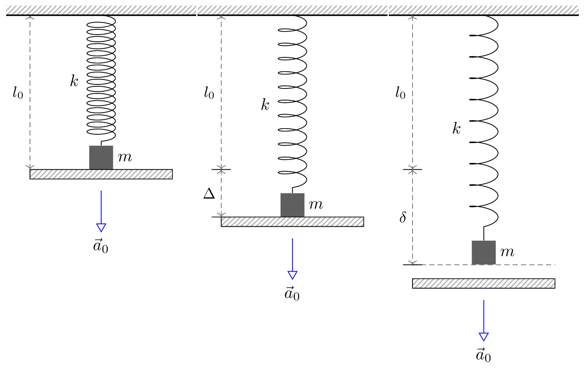

pre.tex
\documentclass[tikz]{standalone}\input{pre.tex}\begin{document}\begin{tikzpicture}[
force/.style={>=latex,draw=blue,fill=blue},
% axis/.style={densely dashed,gray,font=\small},
axis/.style={densely dashed,black!60,font=\small},
M/.style={rectangle,draw,fill=lightgray,minimum size=0.5cm,thin},
m2/.style={draw=black!30, rectangle,draw,thin, fill=blue!2, minimum width=0.7cm,minimum height=0.7cm},
m1/.style={draw=black!30, rectangle,draw,thin, fill=blue!2, minimum width=0.7cm,minimum height=0.7cm},
plane/.style={draw=black!30, very thick, fill=blue!5, line width=1pt},
% base/.style={draw=black!70, very thick, fill=blue!4, line width=2pt},
string/.style={draw=black, thick},
pulley/.style={thick},
% interface/.style={draw=gray!60,
% % The border decoration is a path replacing decorator.
% % For the interface style we want to draw the original path.
% % The postaction option is therefore used to ensure that the
% % border decoration is drawn *after* the original path.
% postaction={draw=gray!60,decorate,decoration={border,angle=-135,
% amplitude=0.3cm,segment length=2mm}}},
interface/.style={
pattern = north east lines,
draw = none,
pattern color=gray!60,
},
plank/.style={
fill=black!60,
draw=black,
minimum width=3cm,
inner ysep=0.1cm,
outer sep=0pt,
yshift=0.75cm,
pattern = north east lines,
pattern color=gray!60,
},
cargo/.style={
rectangle,
fill=black!70,
inner sep=2.5mm,
}
]
% \draw[force,double equal sign distance=2pt,->] (c) -- ++(0,-2) node[below] {$\vec{a}_0$};
\matrix[column sep=0cm, row sep=0cm] {
%%%%%%%%%%%%%%%%%%%%%%%%%%%%%%%%%%%%%%
\node[cargo] (b) at (1,2) {} node[right of=b, xshift=-0.5cm] {$m$};
\node[plank, below of=b, anchor=north] (plank) {};
% \node[right] at (plank.east) {доска};
\draw[axis,<->] (plank.north west) -- node[left, black] {$l_0$} ++(0,3.25);
\node[below] (c) at (plank.south) {};
% \draw[force,double equal sign distance=2pt,->] (c) -- ++(0,-2) node[below] {$\vec{a}_0$};
\draw[force,->,>=open triangle 60] (c) -- ++(0,-1) node[below] {$\vec{a}_0$};
\draw[decoration={aspect=0.3, segment length=1.5mm, amplitude=3mm,coil},decorate] (1,5) -- node[left, black, xshift=-10pt] {$k$} (b);
\draw[interface] (-1,5) rectangle (3,5.2);
\draw[thick] (-1,5) -- (3,5);
&%%%%%%%%%%%%%%%%%%%%%%%%%%%%%%%%%%%%%%
%груз и доска
\node[cargo] (a) at (1,1) {} node[right of=a, xshift=-0.5cm] {$m$};
\node[plank, below of=a, anchor=north] (plank) {};
%верх
\draw[interface] (-1,5) rectangle (3,5.2);
\draw[thick] (-1,5) -- (3,5);
%пружинка
\draw[decoration={aspect=0.3, segment length=3mm, amplitude=3mm,coil},decorate] (1,5) -- node[left, black, xshift=-10pt] {$k$} (a);
\draw[axis,<->] (plank.north west) -- node[left, black] {$\Delta{}$} ++(0,1) coordinate (mid);
\draw[-] ($(mid)-(0.2,0)$) -- ++ (0.4,0);
\draw[axis,<->] (mid) -- node[left, black] {$l_0$} ++(0,3.25);
\draw[-] ($(-0.5,5-3.25-1)-(0.2,0)$) -- ++ (0.4,0);
\node[below] (c) at (plank.south) {};
\draw[force,->,>=open triangle 60] (c) -- ++(0,-1) node[below] {$\vec{a}_0$};
&%%%%%%%%%%%%%%%%%%%%%%%%%%%%%%%%%%%%%
%груз и доска
\node[cargo] (a) at (1,0) {} node[right of=a, xshift=-0.5cm] {$m$};
\node[plank, below of=a, anchor=north, yshift=-0.3cm] (plank) {};
%верх
\draw[interface] (-1,5) rectangle (3,5.2);
\draw[thick] (-1,5) -- (3,5);
%пружинка
\draw[decoration={aspect=0.3, segment length=4.5mm, amplitude=3mm,coil},decorate] (1,5) -- node[left, black, xshift=-10pt] {$k$} (a);
\draw[-] ($(-0.5,5-3.25)-(0.2,0)$) -- ++ (0.4,0);
\draw[axis,<->] (-0.5,5) -- node[left, black] {$l_0$} ++(0,-3.25);
% \draw[axis,<->] (-0.5,5-3.25) -- node[left, black] {$\Delta{}$} ++(0,-1) coordinate (temp);
% \draw[axis,<->] (temp) -- node[left, black] {$\delta{}$} ($(a.south)-(1.5,0)$);
\draw[axis,<->] (-0.5,5-3.25) -- node[left, black] {$\delta{}$} ($(a.south)-(1.5,0)$);
\draw[axis] ($(a.south)-(1.5,0)$) -- ($(a.south)+(1.5,0)$);
\draw[-] ($(a.south)-(1.7,0)$) -- ++ (0.4,0);
% \draw[-] ($(-0.5,5-3.25-1)-(0.2,0)$) -- ++ (0.4,0);
\node[below] (c) at (plank.south) {};
\draw[force,->,>=open triangle 60] (c) -- ++(0,-1) node[below] {$\vec{a}_0$};
\\
};
\end{tikzpicture}\end{document}